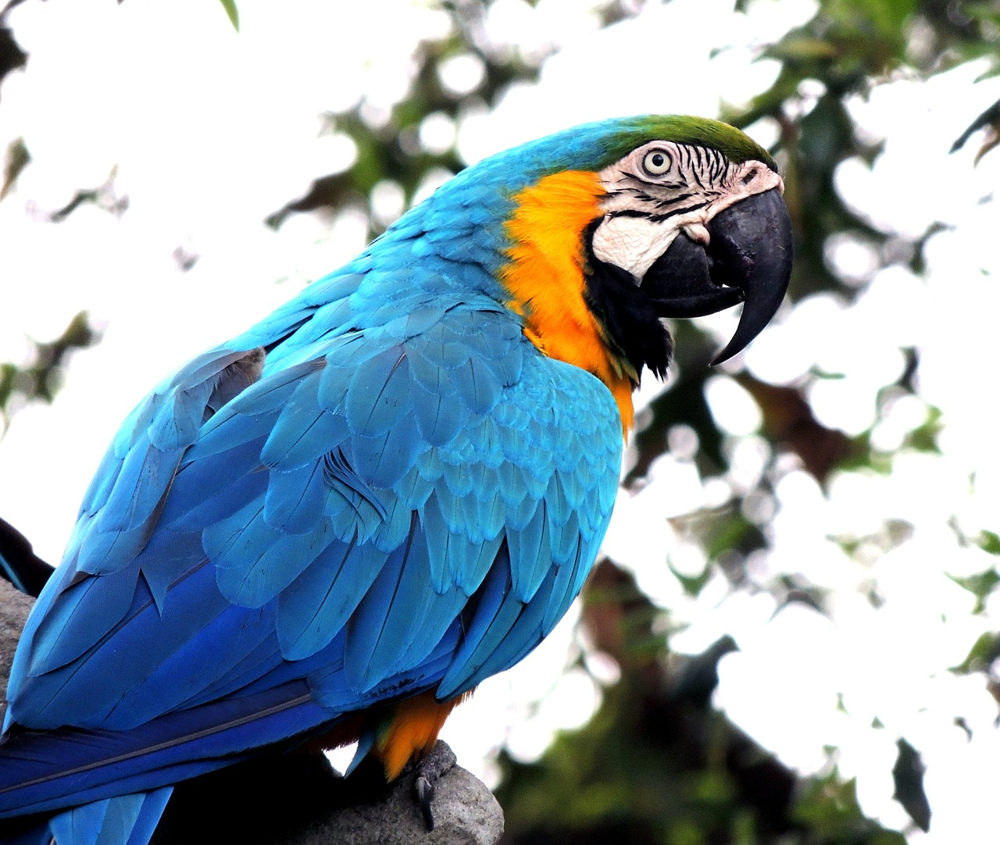

EL LORO
Los loros se caracterizan por tener un pico curvado, con una mandíbula inferior con cierta movilidad en su conexión con el cráneo y situada en una posición bastante vertical. Además tienen una gran capacidad craneal y son uno de los grupos de aves más inteligentes. Son aves que vuelan bien y son capaces de agarrarse a las ramas de los árboles y trepar por ellas con destreza, gracias a sus garras prensiles zigodáctilas (con dos dedos hacia delante y dos hacia atrás).